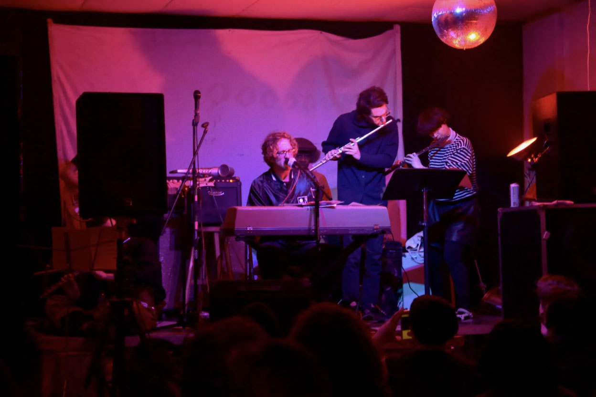

Zac Phillips accompanied by the Baron McShane Traver Flute Consortium performing at The Glove, a DIY Space in Brooklyn. Photo by Madeleine Crenshaw.
The city that never sleeps needs a little pick-me-up after it was found that New York had lost 20 percent of its music venues in the past 15 years.
Last year, the Mayor’s Office of Media and Entertainment
released a comprehensive study on the city’s music industry. The report revealed that New York City’s music venues were vanishing at an alarming rate. The same report also noted that together the music and nightlife industry brings in $21 billion
for the city. Now, policymakers are stepping in to save New York’s small music venues. But in times of rapid development and high rent blight, will their efforts be enough?
“We rarely get to play a DIY space twice,” says Jon Ehlers, who
makes up half of Bangladeafy, a Brooklyn-based prog-rock band. “They’re very important, but sadly come and go.
DIY venues are among the most popular spaces for today’s independent artists and musicians. Although these spaces only make up 4 percent of New York City’s music venues, city agencies see the value in saving them.
“NYC’s legendary small
venues, like CBGB’s, have helped launch artists who became world famous,” said Janet Allon of the Mayor’s Office of Media and Entertainment.
In addition to the Mayor’s Office of Media and Entertainment, the Department of Cultural Affairs
and the New York City Council have helped to create an Office Of Nightlife and launched CreateNYC, New York’s first-ever cultural plan.
In March, the Mayor’s Office of Media and Entertainment announced that former club owner Ariel Palitz
would be New York’s first-ever Night Mayor. The role is designed to serve as a liaison between venues, residents, city officials and law enforcement.
Allon says that the city hopes these recent efforts, like creating an Office of Nightlife,
will help bolster New York’s smaller venues that hold 500 people or less.
“Small music venues are incubators of talent, and are places where up-and-coming musicians and other performers can hone their craft,” says Allon.
But only
time will tell if the city’s efforts will be effective.
“You have all these people who put their hopes and dreams into their businesses, and they get shut down because of antiquated regulations,” says Benny Soto, the venue owner of Output,
an underground electronic music venue in Brooklyn.
Soto said the city’s perception of the music and nightlife industry has traditionally kept the reputation of being a shadowy business. It wasn’t until just last year that the city repealed
the Cabaret Law, which prohibited musical entertainment or dancing without a license.
“A lot of the work the city was doing with nightlife was an old system of dealing with racism and homophobia. We’ve come a long way just repealing the
Cabaret Law,” said Soto.
As the city continues to rapidly develop, owners like Soto express it’s a challenge to keep up a space, especially when there is little communication between spaces and the city.
“For so long, there hasn’t
been a dialogue between the city and venues,” says Soto.
However, Soto says he is optimistic about the city recognizing the nightlife and music industry, a facet of New York that has been left in the shadows for well over a century.
“Back in the day a lot of nightlife and music venues were run by shadowy figures. Now it’s changed. It’s a billion-dollar industry,” says Soto.